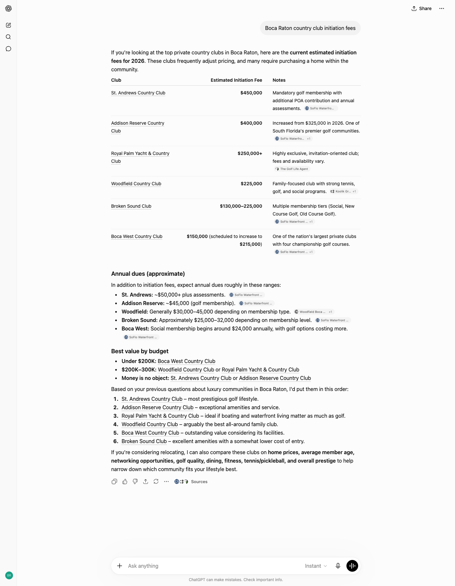
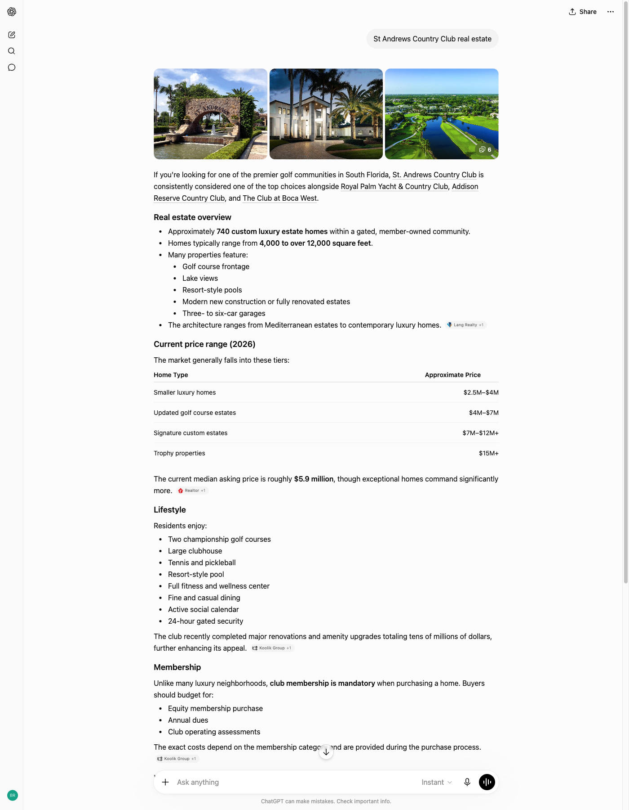
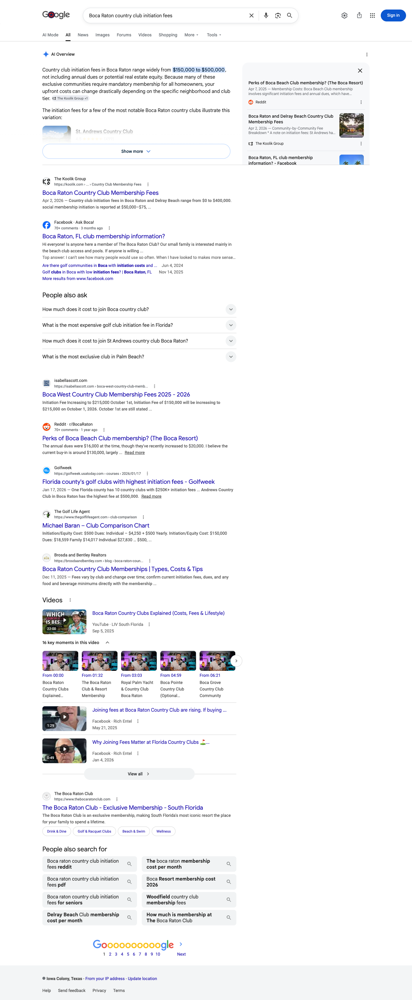
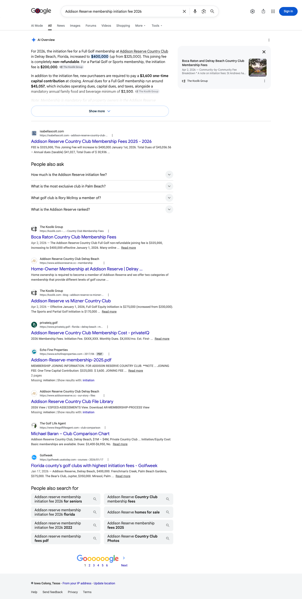
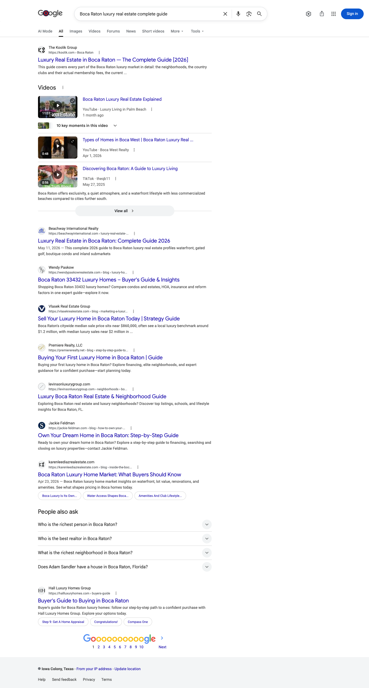

July 2026 | The Koolik Group
Executive summary
In July, a Koolik-owned source was named on ten of the twelve country club and luxury questions we track. That is your core market, and within those twelve the only questions no engine names are Boca West and the broad best place to live question.
ChatGPT is your widest surface, citing you on nine of the twelve. Perplexity follows on seven. The Addison Reserve microsite is doing real work: addisonreserverealestate.com is recorded as a cited source across the Addison cluster, and on the Addison homes-for-sale question it earns the citation without koolik.com.
Google behaves differently from the answer engines. On nine of these twelve questions Google produced no AI Overview when we captured them on July 6, returning listings, maps and business panels instead. Where Google did build an Overview, it named you on two of three, and both are the fee questions, which is the format Google is willing to source from you.
One note on scope before the numbers. The four citation tiles below all read out of those twelve country club and luxury questions. The six investor questions added in late July are reported separately further down, and the Search Console click count covers koolik.com, not the addisonreserverealestate.com microsite.
Citation matrix
✓ Cited: your site is among the sources that answer drew on
– Not cited in the reading for that column
◦ Google did not generate an AI Overview for this question, so there was no AI answer to be cited in
| Buyer question | Google AI Overview | Perplexity | ChatGPT | |
|---|---|---|---|---|
| Boca Raton country club initiation feeskoolik.com | ✓ | ✓ | ✓ | |
| Addison Reserve membership initiation fee 2026addisonreserverealestate.com, koolik.com | ✓ | ✓ | ✓ | |
| Addison Reserve country club homesaddisonreserverealestate.com, koolik.com | ◦ | ✓ | ✓ | |
| Addison Reserve Boca Raton homes for saleaddisonreserverealestate.com | ◦ | ✓ | ✓ | |
| Koolik Group Boca Raton real estatekoolik.com | ◦ | ✓ | ✓ | |
| St Andrews Country Club real estatekoolik.com | ◦ | ✓ | ✓ | |
| St Andrews Country Club Boca Raton homes for salekoolik.com | ◦ | – | ✓ | |
| Woodfield Country Club Boca Raton homeskoolik.com | ◦ | – | ✓ | |
| Royal Palm Yacht Country Club Boca Raton homeskoolik.com | ◦ | – | ✓ | |
| Boca Raton luxury real estate complete guidekoolik.com | ◦ | ✓ | – | |
| Boca West Country Club homes for sale | ◦ | – | – | |
| Best place to live in Boca Raton | – | – | – |
Reading the matrix. Ten of the twelve questions are cited on at least one engine. ChatGPT accounts for nine and Perplexity for seven. The Google AI Overview column is mostly circles because Google did not generate an AI answer for nine of these twelve queries in our July 6 reading; on the three where it did, you are cited on two. Boca West and the broad best place to live question are the only rows with no citation on any engine, and they are the August build targets. The domain line under each question names the Koolik-owned domains recorded as cited on that question in July, kept per question rather than per engine.
How to read the columns. Perplexity and ChatGPT were read on multiple days spread through July. The Google AI Overview column is a single reading taken on July 6, and AI Overviews vary day to day, so treat that column as a snapshot rather than a month. That reading was also taken from a connection outside South Florida, and Google localizes these answers, so a search run from inside the market can return a different result. A circle means no AI Overview appeared in that reading, not that Google never builds one for that question. Every AI Overview was read as Google first rendered it, with collapsed source lists left unexpanded and side panels as displayed. So any list of sources named in this report is what Google showed first on that reading, not a complete inventory of everything the answer drew on. Perplexity and ChatGPT rebuild their answers on every run, and their source sets shift day to day as well. A check mark in those two columns means your domain was among the sources on at least one reading in July, not that it appears on every run.
Story one
ChatGPT cites a Koolik-owned source on nine of the twelve questions. It reaches for you across most of the country club set: the fee cluster, the individual club guides, and the homes-for-sale queries for every club except Boca West.
The domains column lists the Koolik-owned domains recorded as cited on each question in July. That record is kept per question rather than per engine, so a question naming two domains means both were recorded on that question during the month, not that each engine named both.
| Buyer question | Status | Owned domains cited on this question |
|---|---|---|
| Boca Raton country club initiation fees | Cited | koolik.com |
| Addison Reserve membership initiation fee 2026 | Cited | addisonreserverealestate.com, koolik.com |
| Addison Reserve country club homes | Cited | addisonreserverealestate.com, koolik.com |
| Addison Reserve Boca Raton homes for sale | Cited | addisonreserverealestate.com |
| Koolik Group Boca Raton real estate | Cited | koolik.com |
| St Andrews Country Club real estate | Cited | koolik.com |
| St Andrews Country Club Boca Raton homes for sale | Cited | koolik.com |
| Woodfield Country Club Boca Raton homes | Cited | koolik.com |
| Royal Palm Yacht Country Club Boca Raton homes | Cited | koolik.com |


Story two
Perplexity cites you on seven of the twelve. The Addison Reserve cluster is the anchor: all three Addison questions are cited, and addisonreserverealestate.com is on the July citation record for every one of them.
As above, the domains column is kept per question rather than per engine, so it names the Koolik-owned domains recorded on that question across July.
| Buyer question | Status | Owned domains cited on this question |
|---|---|---|
| Boca Raton country club initiation fees | Cited | koolik.com |
| Addison Reserve membership initiation fee 2026 | Cited | addisonreserverealestate.com, koolik.com |
| Addison Reserve country club homes | Cited | addisonreserverealestate.com, koolik.com |
| Addison Reserve Boca Raton homes for sale | Cited | addisonreserverealestate.com |
| Koolik Group Boca Raton real estate | Cited | koolik.com |
| St Andrews Country Club real estate | Cited | koolik.com |
| Boca Raton luxury real estate complete guide | Cited | koolik.com |
Story three
Google does not build an AI Overview for every question. Across these twelve, our July 6 reading found one on only three. The rest returned listings, maps and business panels instead. On the three where an Overview did appear, Google named The Koolik Group on two.
These Google readings were taken on July 6 from a connection outside South Florida. AI Overviews vary by day and by location, so read this column as one day’s snapshot rather than a settled monthly picture.
Google’s AI Overview answers the market-wide fee question and attributes The Koolik Group inline, and it carries your Boca Raton and Delray Beach country club membership fees comparison as a card in the source rail. The three source cards Google shows there are a Reddit thread, a Facebook thread and your fees comparison, so on the question that decides whether a buyer can afford a club, yours is the professional source in a rail that is otherwise community chatter.

The same pattern repeats on the Addison-specific fee question, with The Koolik Group attributed twice inside the Overview body and the same fees comparison in the source rail. One well-built fee guide is answering both the market-wide and the community-specific version of the question.

Google wrote no Overview on this question in the same reading. It went straight to links, and the first one on the page was your own luxury guide on koolik.com. Where Google declines to write an answer, the top link is the whole prize, and on this question it was yours.

The investment division
You asked us to extend Total Search to the investment side of the business. We added six investor questions to your tracking in late July. This is their first read, so treat it as a starting line rather than a month’s result. Two of the six are already cited.
| Investor question | Status | Where cited |
|---|---|---|
| Koolik Group real estate investing | Cited | Perplexity, ChatGPT |
| Boca Raton vs Delray Beach investment property | Cited | Perplexity |
| Boca Raton investment property guide | – | Not yet |
| 1031 exchange Boca Raton investment property | – | Not yet |
| Boca Raton rental property cash flow | – | Not yet |
| Rental property rules Boca Raton country club communities | – | Not yet |
Gaps as opportunities
Two threads run through July: your club depth is working, and the investment questions you asked us to track are mostly unclaimed ground.
Four of the six investor questions are not yet earning a citation, and none of the Total Search content built so far covers the investor set. A single thorough Boca Raton investment property guide, covering cash flow, rental rules and the 1031 exchange, is the one asset that addresses all four at once.
Boca West is the one club query no engine cites yet. One contributing factor is concrete: bocawestrealestate.com does not resolve as of this report, so there is no Boca West microsite for an engine to reach today. Your Boca West versus Broken Sound comparison on koolik.com is carrying that ground alone. A dedicated Boca West microsite built to the Addison pattern, with a homes-for-sale page and a fee page, is the route in. Confirm who holds that domain first.
This is the broadest discovery question you track and the only one where Google built an Overview without naming you. The sources Google names there are Reddit and Facebook threads plus one third-party neighborhood guide, with further sources collapsed behind the chip. Displacing community answers takes a genuinely comparative, data-backed neighborhood page, which makes this the hardest of the targets: scope it as a two-month build rather than a quick win.
Fee and cost content is the format Google sourced from you in this reading. Your Woodfield and Royal Palm community guides are live, so the next step is a fee and cost page for each, built to the standard of your Boca Raton and Delray Beach country club membership fees comparison, the page Google is already sourcing from.
Your Boca Raton luxury real estate complete guide was the first result on Google when we captured that question on July 6, shown above, and Perplexity names koolik.com on that question, but ChatGPT does not reach for you on it yet. That is a structure and entity-clarity fix on a page you already have, not a new build: a direct summary answer near the top, clearer naming of the communities and price tiers it covers, and internal links from the club guides ChatGPT already cites.